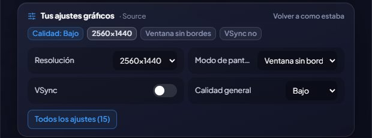

Zmieniaj ustawienia graficzne każdej gry
Jakość, rozdzielczość, tryb wyświetlania, limit FPS, VSync… z GameHub, bez otwierania gry.
GameHub odczytuje ustawienia graficzne zapisane przez każdą grę i pokazuje je na jej stronie. W grach, które zapisują ustawienia w znanym formacie, możesz je też zmieniać: najważniejsze (ogólna jakość, rozdzielczość, tryb wyświetlania, limit FPS i VSync) są od razu pod ręką, a „Wszystkie ustawienia” otwiera okno ze wszystkimi, pogrupowanymi i z wyszukiwarką.
Rozumie gry zrobione na Unreal Engine (Borderlands 3 i 4, Hogwarts Legacy, THE FINALS…), Unreal Engine 3 (Rocket League, Killing Floor 2…), Unity i Source (Counter-Strike 2…), a także GTA V (Legacy i Enhanced), Cyberpunk 2077 i Far Cry od 2 do 6.
Przed pierwszą zmianą zachowuje kopię tego, jak wszystko było: przyciskiem „Przywróć oryginał” cofniesz wszystko. Gdy gra jest otwarta, nie pozwoli niczego zmienić (gra nadpisałaby to przy wyjściu) i respektuje pliki tylko do odczytu.
Opcje uruchamiania: zapisz własne opcje każdej gry (np. -dx11 lub -novid), włączaj i wyłączaj każdą jednym kliknięciem i zmieniaj ich kolejność. Są dodawane, gdy otwierasz grę z GameHub (na Steam razem z tymi, które tam ustawiłeś); w każdej grze, nawet jeśli GameHub nie potrafi odczytać jej ustawień. Epic, Ubisoft i EA nie pozwalają ich przekazywać: dostaniesz o tym informację. Możesz też nadać każdej grze własny priorytet i koligację (których rdzeni procesora używa), stosowane, gdy gra działa. W becie
Także The Witcher 3 i Back 4 Blood, a w Cyberpunk 2077 możesz wybrać, na którym ekranie grać.
Ustawienia mają własną kartę na stronie gry: u góry ustawienia ekranu, a niżej jakość i efekty, tyle, ile się zmieści, z «Wszystkie ustawienia» pod ręką.
Jak z tego korzystać
- Na stronie gry, karta „Ustawienia graficzne”.
- Zmień, co chcesz, i kliknij „Zapisz”: zauważysz to przy następnym otwarciu gry.

Chcesz spróbować?
⬇ Pobierz bezpośrednio 🛍️ Pobierz ze sklepu Microsoft StoreWindows 10 i 11 (64-bit) · Za darmo · Aktualizuje się sam